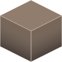
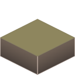
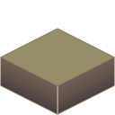
MON PREMIER PROJET
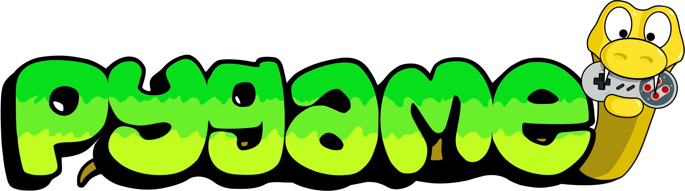
[Tous les coups sont permis]
Ayant découvert le langage de programmation Python et la bibliothèque Pygame, j’ai décidé de concrétiser
mes envies de créations de contenu sur un jeu similaire à Dofus de Ankama Games.

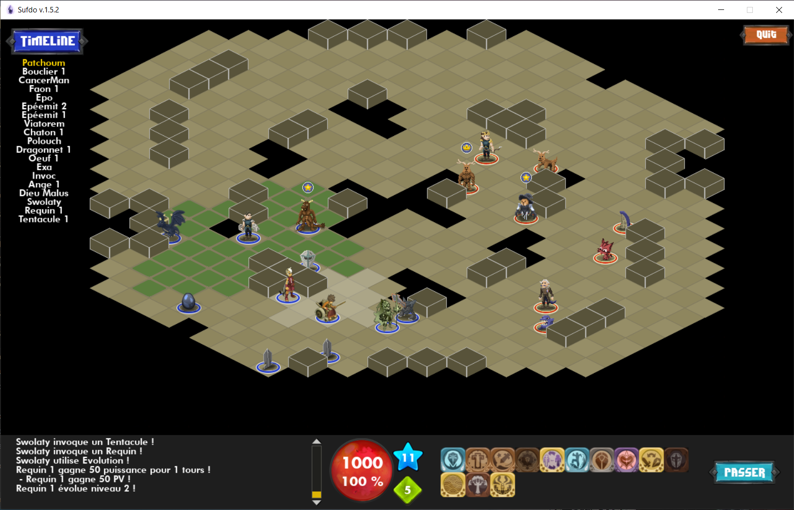
Le principe du jeu est simple : vous êtes un héros et vous devez affronter d’autres joueurs à l’aide de vos sortilèges.
Le jeu se fait tour par tour, dans un monde en vue isométrique.
UNE EVOLUTION GRAPHIQUE ET FONCTIONNELLE
Avant d’arriver à ce résultat (~300h), il a fallut implémenter toutes les fonctionnalités visibles : interfaces,
timeline, chat, indicateurs de déplacement et d’action, etc.
Le chemin était long mais enrichissant. Chaque fonctionnalité était un nouvel obstacle à franchir avec créativité.
Que ce soit du dessin, du design ou des algorithmes, chaque étape était complexe.
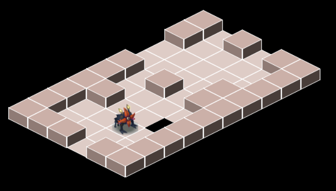
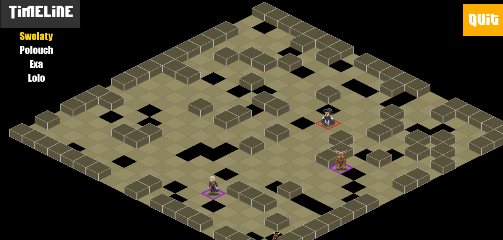
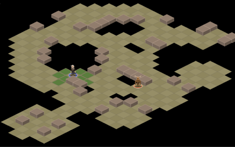
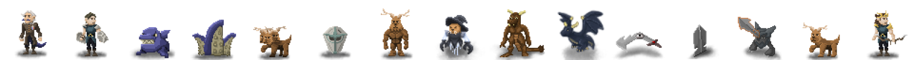
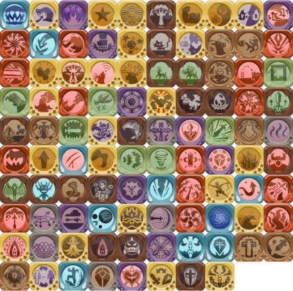
UNE PREMIERE APPROCHE DE LA PROGRAMMATION
Comme première expérience en programmation, ce ne fut pas un projet simple à la réalisation. Néanmoins,
cela me propulsa dans le monde de l’informatique qui est un outil de création incroyable.
Dans ce projet, j’ai expérimenté une multitude de choses : les bibliothèques graphiques (Pygame),
l’utilisation de Threads, l’optimisation de code et surtout le debugging...
Outre cela, j’ai été amené à résoudre des problématiques plus mathématiques :
- l’algorithme A* pour la recherche du plus court chemin entre deux cases
- le problème des lignes de vues des sortilèges, résolut avec des angles morts et distances
- l’implémentation d’un bot qui joue tout seul ses sortilèges et ses déplacement, faite avec des
coefficients de priorité sur les actions en fonctions de nombreux paramètres
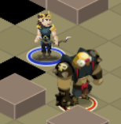
Bot avec une apparence de Peki du Chaos
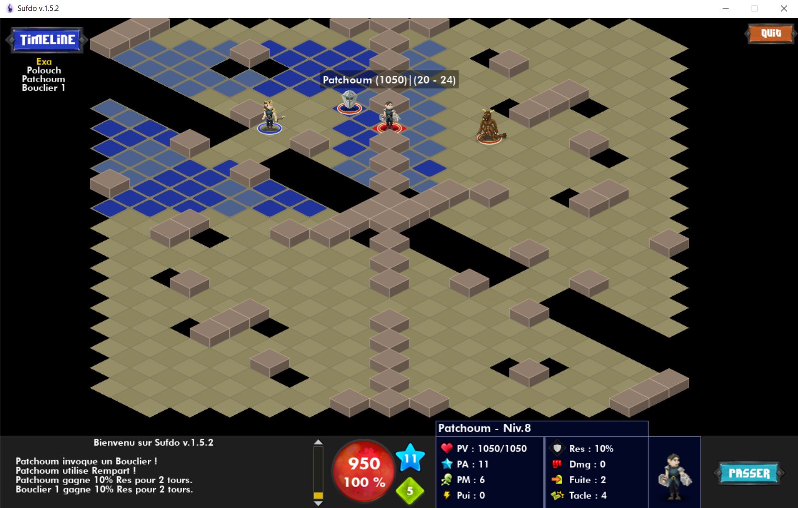
Un sortilège de la classe Justicier qui inflige des dégats à distance
UN REMAKE DE SUFDO
Sufdo était fonctionnel, mais le renouveau faisait son appel. Une meilleure architecture, une meilleure résolution,
une meilleure interface, un mode multijoueur à distance ; c’est ce que Suward promettait. (+300h)
Ayant des bases plus solides en programmation et ayant découvert plus en détail la Programmation
Orienté Objet (POO) avec le langage Java, j’ai décidé de m’investir dans ce nouveau projet.
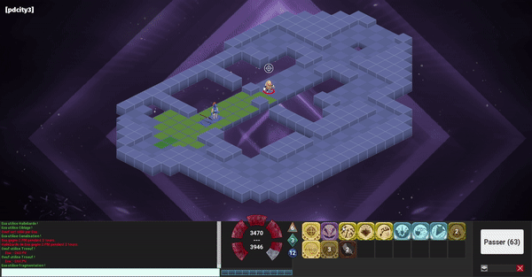
Ce projet était très similaire au premier. De nombreux éléments ont été seulement
réécris comme les algorithmes de chemin, de ligne de vue, etc.
Néanmoins, beaucoup de choses ce sont avérées être différentes. Les bibliothèques utilisées étaient LibGDX
pour l’affichage graphique et KryoNet pour la partie réseau et serveur.
LE COUP DE POLISH
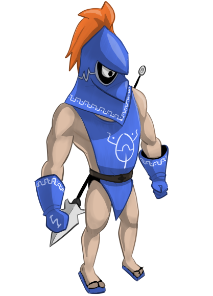
De bons graphismes sont primordiaux dans un jeu de qualité. J’en suis persuadé. C’est donc pour cette raison que
j’ai mis l’accent sur le bon rendu de Suward. Cela passe par une augmentation de la résolution sur toutes les
images et une attention particulière sur l’interface graphique.
Bien que je n’ai pas un niveau professionnel en dessin, je suis satisfait de ce que j’ai pu faire. En fait, il
ne suffit pas d’un très bon niveau en dessin pour obtenir un bon rendu.
L’important, c’est la cohérence de la technique utilisée avec l’ensemble.
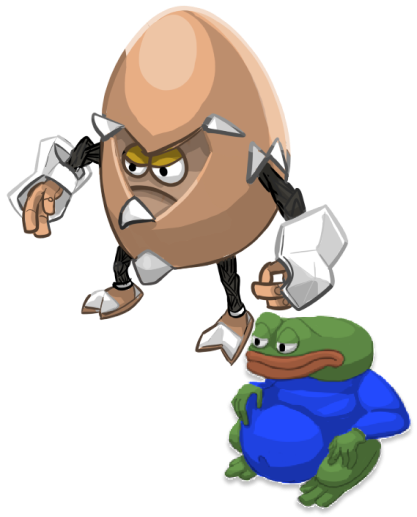
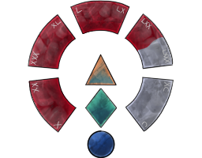
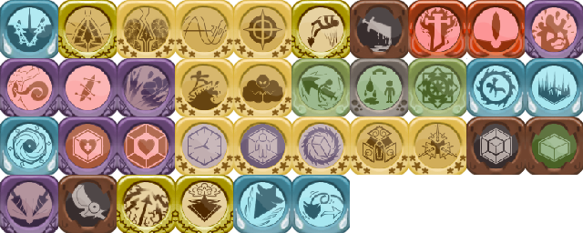
TOUJOURS PLUS LOIN
Ce projet, outre la possibilité de d’avantage créer et de m’amuser, a été initiatique sur des domaines comme la
POO et les réseaux, et m’a permis d’aller encore plus loin dans la programmation.
Si vous avez des questions, des idées, ou que vous souhaitez obtenir les codes sources,
n’hésitez pas à me contacter : suward.games@gmail.com !
Accueil